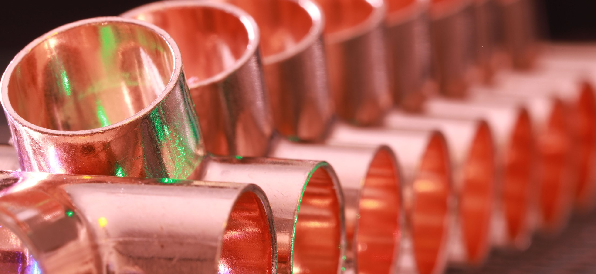
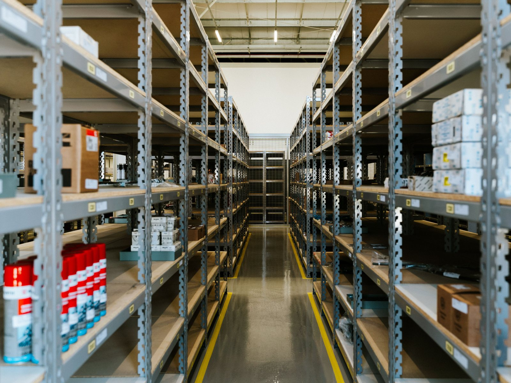
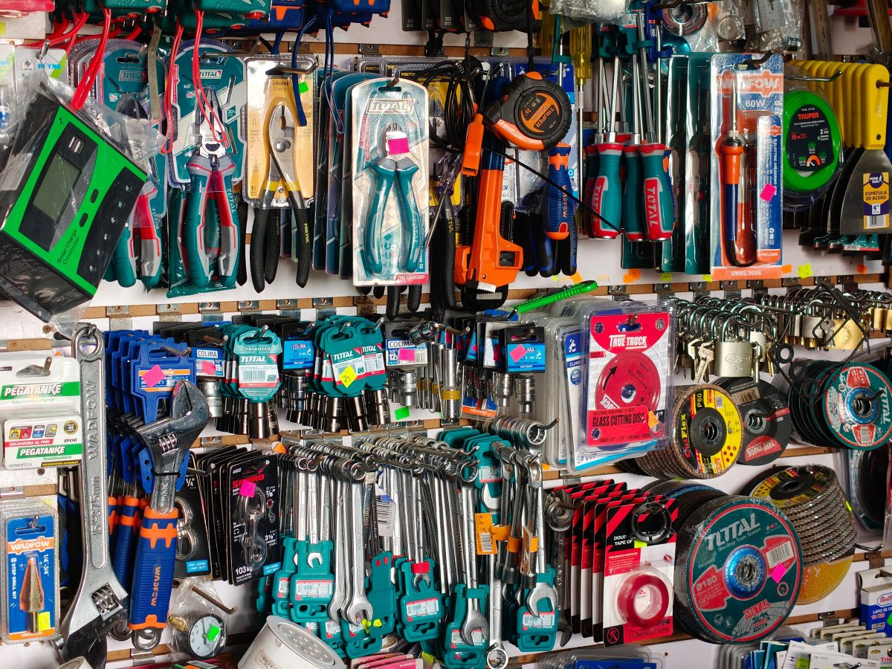
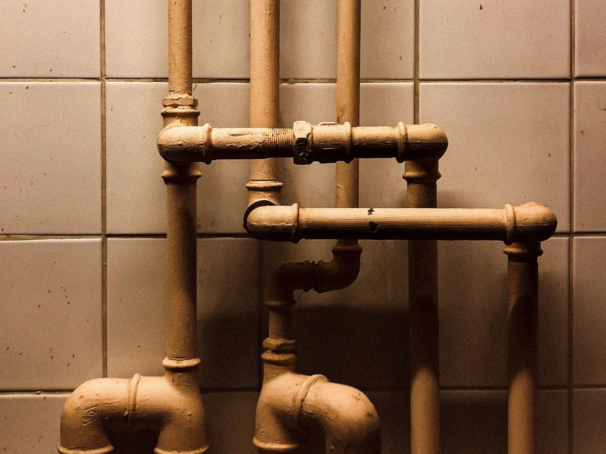
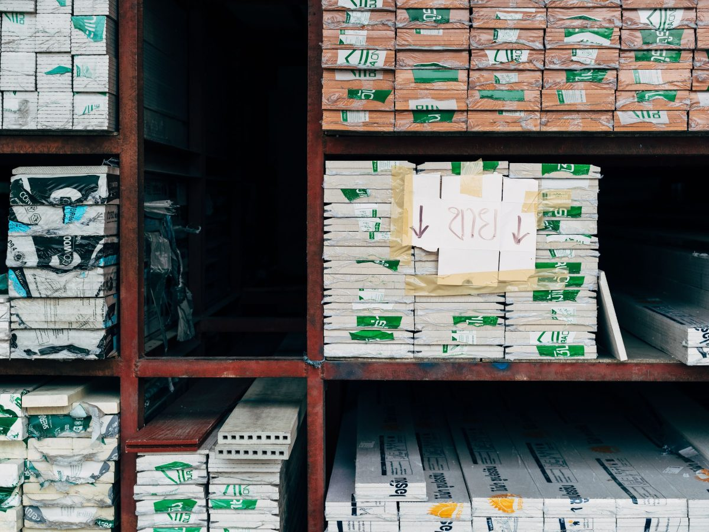
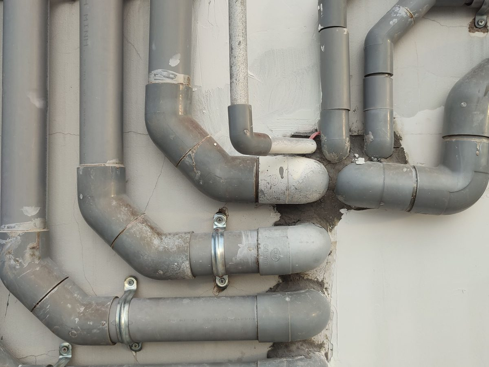
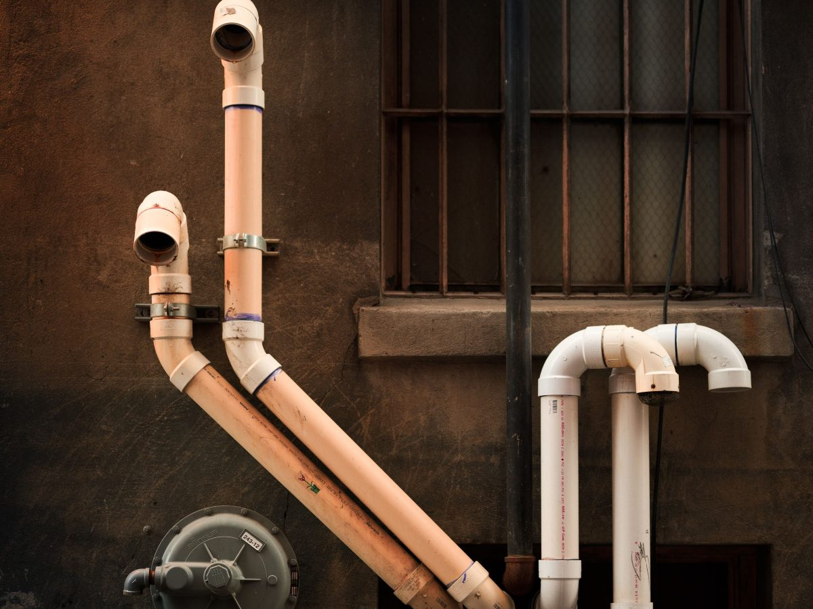
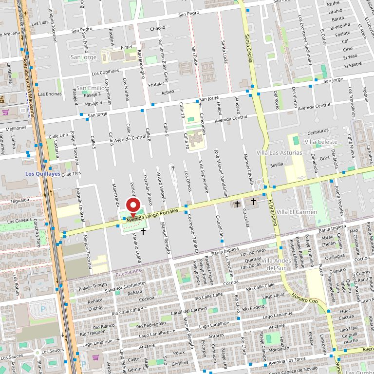

Codo
Hace doblar la cañería 90 grados. Si el giro es más suave, se pide codo de 45.
La Florida · gasfitería, fijaciones y herramienta
Todo el mundo llega al mesón haciendo el gesto con las manos. Acá están dibujadas las siete piezas de gasfitería que más se piden, con el nombre que hay que decir y para qué sirve cada una. Aprenderlo una vez ahorra tres viajes.
La pregunta que se hace con las manos
Los nombres son los del rubro: si los dice tal cual en el mesón, lo entienden al tiro. Acá no hay instrucciones para instalar nada —el agua y el gas no se aprenden en una página— sino el nombre y para qué sirve. Lo demás se pregunta ahí mismo.
Hace doblar la cañería 90 grados. Si el giro es más suave, se pide codo de 45.
Parte una cañería en dos. Se dice «te», como la letra.
Un pedazo corto de tubo con hilo en las dos puntas, para unir dos cosas que no se tocan.
Une dos tubos del mismo diámetro, de frente. Si los diámetros son distintos, es copla reducción.
La pieza que queda a la vista en el muro y donde después se atornilla la llave o la ducha.
Corta el agua de un tramo sin cortarla en toda la casa. La que más se agradece tener.
Manguera trenzada con tuercas en las puntas, para llegar donde el tubo rígido no llega.
Acá no hay instrucciones para instalar, a propósito. El agua y el gas no se aprenden en una página, y una unión mal hecha se paga en la cuenta o en algo peor. Lo que sí sirve es llegar sabiendo cómo se llama la pieza: si no está en esta lista, traiga la pieza vieja o una foto y en el mesón la reconocen.

Lo que se encuentra
Esto va marcado porque todavía no está confirmado: es lo que suele haber en una ferretería de barrio de este tamaño. La lista de verdad la dictan ellos en cinco minutos.
Un dato que sí está comprobado: Fanaloza los tiene en su localizador oficial de «dónde comprar». Es una marca sanitaria reconociéndolos como punto de venta, y hoy eso no se menciona en ninguna parte.

Lo que no está en la góndola
En una ferretería de barrio la mitad de lo que sirve se pide por pieza, se encarga o está en un cajón que no se ve. Eso no aparece en ninguna ficha de Google y es exactamente lo que hace que la gente vuelva.
Los cuatro están marcados porque son datos que sólo tiene el dueño. Son, además, los cuatro que más se preguntan por teléfono.
«Nina son cuatro letras.
En Google, cuatro letras no son nadie.»
La dirección
La dirección viene de directorios de terceros y del localizador de Fanaloza, no de una página suya. Es el primer dato que hay que confirmar antes de publicar, junto con el horario.





Estas fotos son de bancos de uso libre y no son de Nina. Están para que se vea de qué habla la página. Las de verdad están adentro del local.
Contacto
Dirección
Av. Diego Portales 264
La Florida
Horario
___ a ___
@ferreteria_nina
Existe una cuenta con ese nombre y 154 seguidores, pero su descripción no dice la comuna: hay que confirmarlo.

Para el dueño de la ferretería
En NIC Chile, ferreterianina.cl, ferrenina.cl y ninaferreteria.cl no están registrados. Cualquiera de los tres cuesta lo que cuesta un dominio al año y son exactamente el nombre del local.
El corto, nina.cl, ya no está: lo tomó una empresa de hosting el 26 de noviembre de 2025 como «titular temporal por mandato del cliente». Ése ya se fue, y los otros tres están ahí esperando.
«Nina» son cuatro letras y un nombre de persona. Quien busca «ferretería Nina La Florida» sin una página propia se topa con perfiles, mapas y otras Ninas. Con el dominio y el nombre completo escrito, la búsqueda cae donde tiene que caer.
Y hay un activo que hoy no se usa: Fanaloza los lista en su localizador oficial de «dónde comprar». Es una marca diciendo que ahí se compra. Eso, en una página propia, vale más que cualquier adjetivo.
Demo hecha por CristalWeb · Los datos de dominios salen de la consulta pública de NIC Chile del 11-09-2026. La dirección y el horario vienen de directorios de terceros y están por confirmar. Lo marcado con línea de puntos son huecos a completar, no datos inventados. Sin precios y sin instrucciones de instalación: eso lo pone la ferretería.